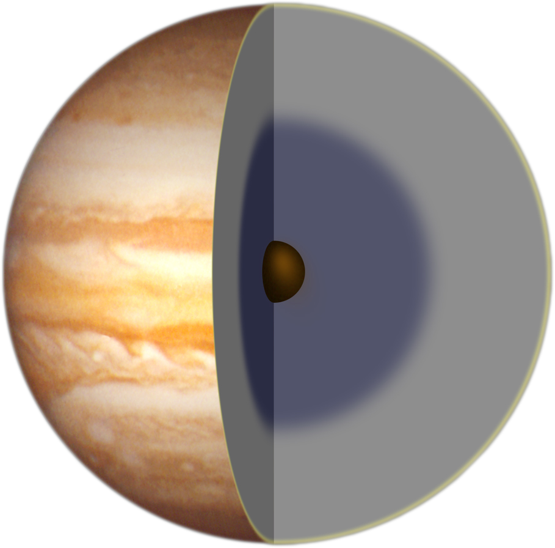

| HOMEPAGE | SISTEMA SOLARE | CORPI CELESTI | ||
| paramentri orbitali | |
| semiasse maggiore | 778 412 027 km 5,203 363 01 UA |
| periodo orbitale | 4 333,2867 giorni (11,863 892 anni) |
| perdiodo sinodico | 398,88 giorni 1,092 073 anni) |
| Velocità orbitale |
12,446 km/s (min) 13,056 km/s (media) 13,712 km/s (max) |
| satelliti | 67 |
| anelli | 4 |
| dati fisici | |
| diametro equatoriale | 142 984 km | superficie | 6,21796 x 1016 m2 |
| velocità di rotazione | 12 580 m/s |
| temperatura | 110 K (-163 °C) |
il quinto pianeta
Giove è il quinto pianeta in ordine di distanza dal Sole e il primo, per massa e dimensioni, del Sistema solare, con un diametro circa 11 volte più grande di quello della Terra; la sua massa corrisponde a 318 volte quella del nostro pianeta (il doppio di quella di tutti gli altri messi insieme), ma a causa della minore densità (un quarto di quella terrestre) il suo volume è più di 1.000 volte quello della Terra. Giove, come Saturno, Urano e Nettuno, è un pianeta gassoso o gioviano. Ha 16 satelliti principali e un sistema di 3 anelli. A causa della enorme massa, la sua forza di gravità risulta quella più alta tra i pianeti e pari a circa 2,4 volte quella della Terra. Per fare un esempio, un oggetto che sulla Terra pesasse 100 chili, su Giove ne peserebbe 240. Giove è costituito (come Saturno) prevalentemente da idrogeno ed elio, e presenta una struttura complessa, tipica dei pianeti gassosi, in cui la materia che costituisce il pianeta diventa progressivamente più densa procedendo verso la parte interna di quest'ultimo; la suddivisione tra i diversi strati non è tuttavia ben definita.
Il nucleo è probabilmente di piccole dimensioni, denso e di natura rocciosa (ferro e silicati), con una composizione simile a quella della Terra ma una massa di 20-30 volte superiore. Qui la compressione gravitazionale del pianeta produce elevatissime pressioni (450 milioni di atmosfere) e temperature che raggiungono i 24.000 °C. Il grande calore generato dal nucleo è causa delle correnti convettive negli strati fluidi più esterni.
Esternamente al nucleo esiste un mantello di idrogeno ad alta pressione (2 milioni di atmosfere), che si trova allo stato metallico ed è responsabile del campo magnetico del pianeta; l'idrogeno si trova poi dapprima in forma liquida e poi in forma gassosa.
L'ultimo strato, spesso circa 1.000 km, costituisce l'atmosfera del pianeta, di cui dalla Terra è visibile solo la parte più esterna, formata da dense nubi rosse, marroni, gialle e bianche, con una temperatura decrescente all'aumentare della quota, che raggiunge i -145 °C negli strati più esterni. L'atmosfera di Giove è molto turbolenta, con venti mossi dal calore interno al pianeta (e non dal Sole come avviene sulla Terra) che soffiano a più di 600 km/h e che si estendono per migliaia di chilometri verso l'interno. Giove possiede un diametro che rappresenta il massimo raggiungibile dai pianeti gassosi, nel senso che a causa della grande pressione interna, un aumento della sua massa farebbe crescere di pochissimo la sua dimensione. Giove si può definire tuttavia come una stella mancata. La sua composizione chimica è infatti molto simile a quella del Sole e delle altre stelle e se la sua massa fosse stata più grande (di circa 80 volte), le condizioni di temperatura e pressione del nucleo avrebbero potuto raggiungere un livello tale da innescare le reazioni di fusione nucleare che presiedono al "funzionamento" delle stelle.
Giove si è formato, come gli altri pianeti del Sistema solare, a partire da un ammasso sferico di gas e polveri in rotazione, che è andato progressivamente raffreddandosi. Il pianeta sta al momento ancora espellendo parte del calore iniziale e per questo motivo è l'unico pianeta del Sistema solare, insieme a Saturno, che emette più energia di quanta ne riceva dal Sole.
Il fenomeno più caratteristico, tra quelli che si verificano sulla superficie del pianeta, è quello noto con il nome di Grande Macchia Rossa. Si tratta di una regione dalla forma ovale, che si sposta a circa 360 km/h in senso orizzontale, da est verso ovest, e la cui latitudinelatitudine
La latitudine è la coordinata geografica pari all'altezza del polo celeste sull'orizzonte resta invece più o meno sempre la stessa (cioè la zona non si muove verso nord o verso sud). La Grande Macchia Rossa è osservata dalla Terra da più di 300 anni e varia continuamente in estensione: il suo diametro può arrivare ad essere circa tre volte quello terrestre. La regione, sede di un ciclone stabile, è una zona di alta pressione le cui nubi sono molto più alte e fredde rispetto a quelle delle regioni circostanti. La presenza di solfuri e fosfuri nei cristalli di ammoniaca le conferiscono il caratteristico colore rosso, colore che varia comunque con il tempo, dal rosso mattone, al rosa salmone, all'arancio, al giallo, al grigio, fino a divenire talvolta talmente pallido da rendere la zona difficilmente distinguibile.